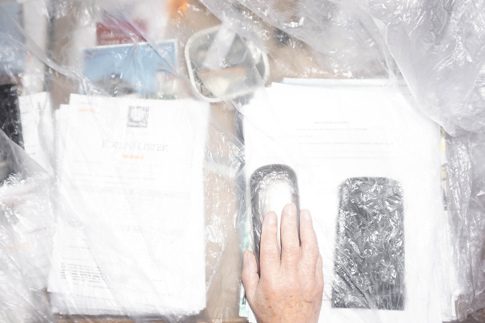
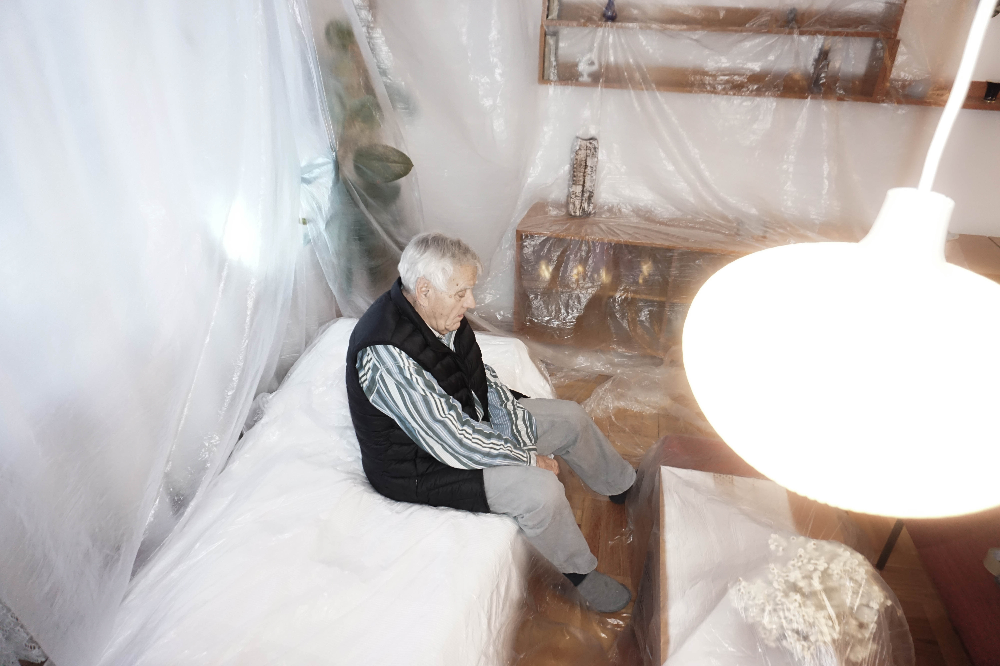
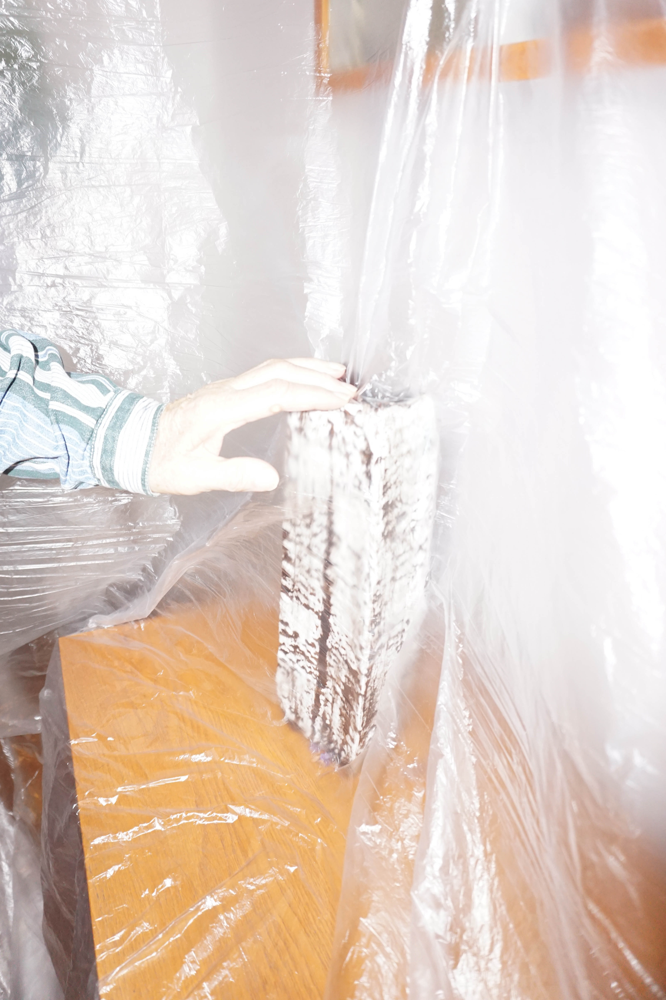
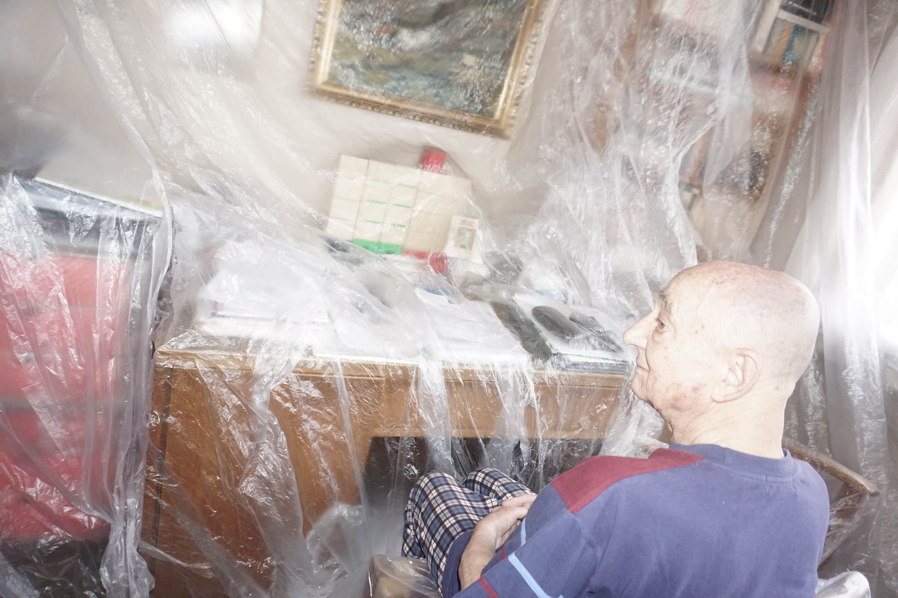
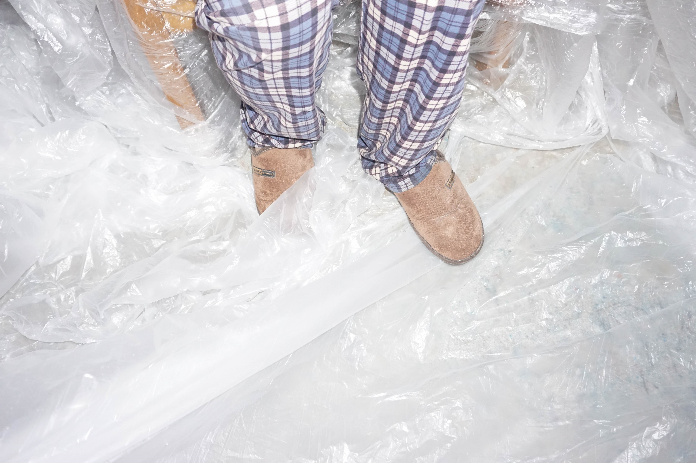
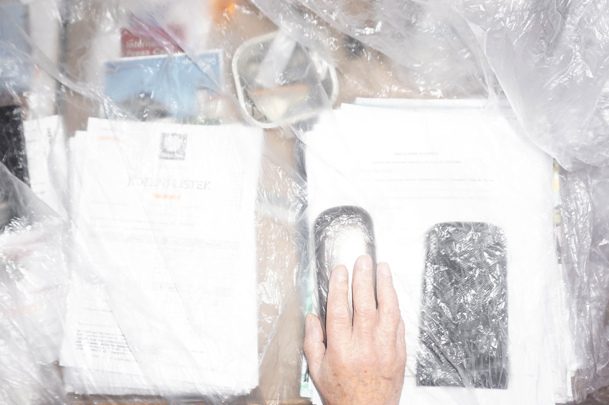
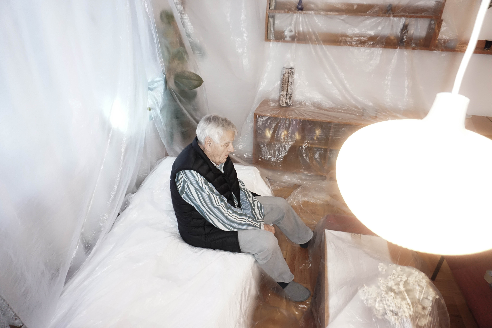
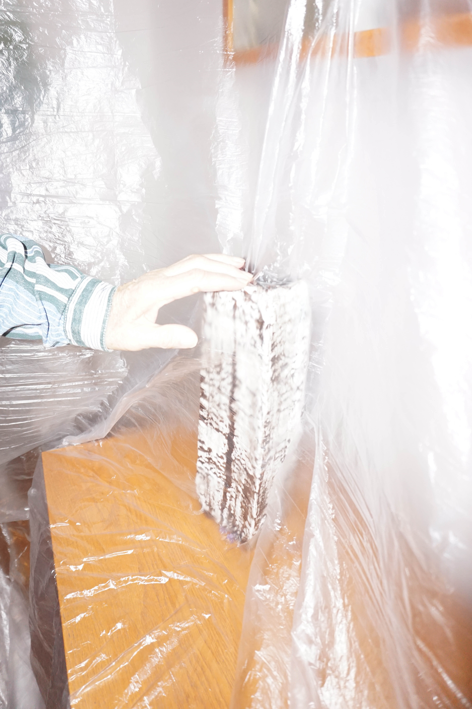
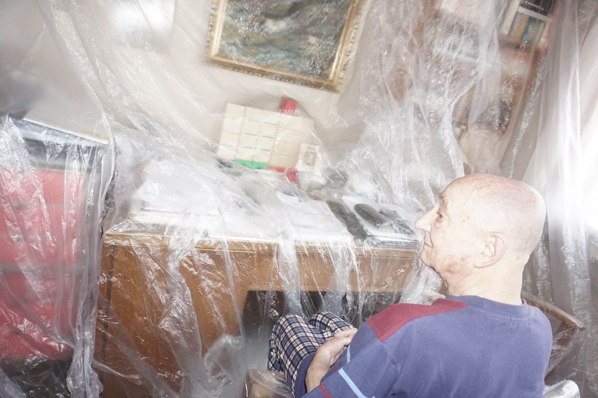
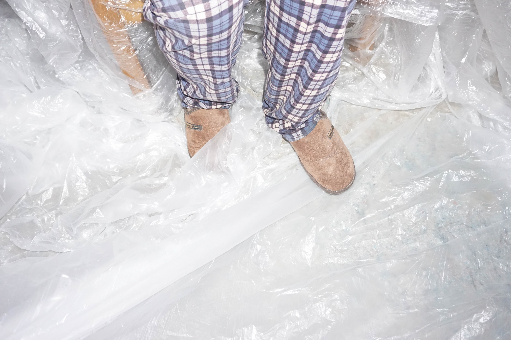

001 | 2025


 









Home, not a Home
2024
Public space is often described as empty, neutral, or unfinished. Planyrka is read this way as well. From a distance — especially from a car — it appears open, underused, available. From the ground, it is something else entirely.
Planyrka is not empty. It is full of negotiations. Between human and non-human life. Between movement and staying. Between what is allowed and what is merely tolerated. These negotiations do not happen through design or regulation. They happen through use.
Subcultures are dependent on public space. Not on buildings. Not on institutions. Not on permission. They rely on gaps, edges, and leftover zones — spaces not fully defined by a single function. In these spaces, multiple ways of being can coexist without formal agreement. What appears informal is often highly adaptive.
Parking lots are treated as neutral infrastructure. They are not neutral. They prioritize storage over encounter. Circulation over presence. Waiting over use. Even when empty, they remain occupied — by rules, expectations, and the future arrival of cars.
Cars function as an organizing force. They determine scale, speed, and proximity. They occupy space physically and structure it invisibly. Through priority and repetition, cars exclude mixed communities — human and non-human alike — by limiting how space can be used.
The intervention does not attempt to correct this condition. It does not offer a solution. The object is a question placed on asphalt. The skateboard bale object interrupts a habit rather than replacing it.
Skateboarding was chosen not as a sport, but as a connective subculture — moving between informal communities and organized structures. The object does not claim ownership of space. It tests how space responds.
Appropriation is often read as damage. Here, it functions as care. Not destruction. Not protest alone. Not permanence. By slightly misusing what already exists, appropriation makes existing values visible.
Appropriation does not claim space. It exposes the conditions under which space is allowed to exist.